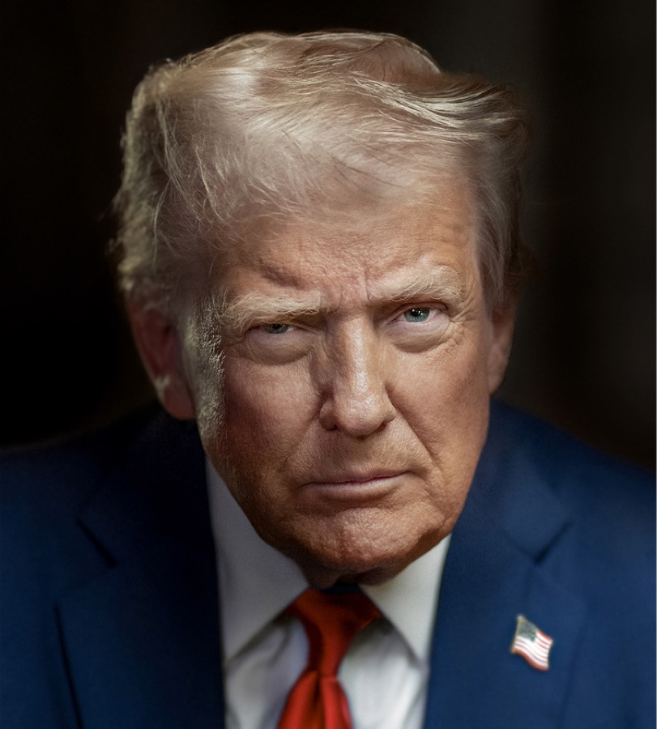
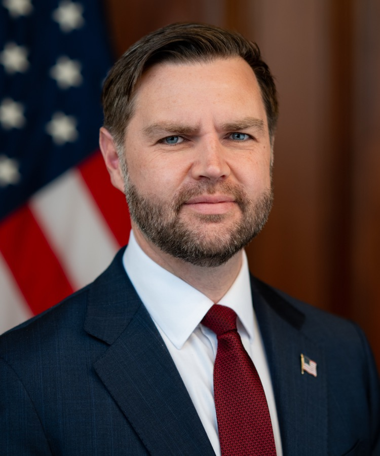

Executive Summary
This article reads one page signed at the White House on September 29, 2026. Leaders of six companies put their names on the White House Accord on Super Intelligence: Google, Anthropic, Meta, OpenAI, xAI, and Nvidia. They promised to watch the models they build through four layers. Controls inside the company, an internal team checking that those controls work, an independent auditor brought in from outside, and an independent committee of the board reading the resulting reports.
Four layers, and the question is who staffs one of them. The company under audit is the one that chooses its external auditor. The accord carries no penalty for breaking it, no duty to say who the auditor was, and no date by which any of it has to exist. The largest blank sits somewhere else again. Whether the auditor looks at model weights directly, probes the model under conditions close to how it is deployed, or reads a summary the company wrote for the occasion is not settled anywhere in the text.
Sections 1 through 5 report what the coverage and the public documents establish. Section 6 reads the same facts through the lens of data quality, and that reading is ours.
Key Numbers
Sources: Nextgov, CoinDesk (September 29–30, 2026), and Korea's AI Framework Act.
6
Companies that signed
Google, Anthropic, Meta, OpenAI, xAI, and Nvidia sent their leaders to one table
0
Penalties for breaking it
A voluntary pledge with no cost attached to walking away, and no compliance date
60 days
Until a legal definition is drafted
The order changes the word first and asks for its meaning two months later
1026
Korea's threshold in FLOPs
Safety duties attach by training compute rather than by a name
Two Documents Signed on the Same Day
Six companies sent people to the White House on September 29, 2026. Sundar Pichai of Google, Dario Amodei of Anthropic, Mark Zuckerberg of Meta, president Greg Brockman of OpenAI, Elon Musk of xAI, and Jensen Huang of Nvidia. The document they signed is formally titled the White House Accord on Super Intelligence: Joint Commitment on Frontier Responsibilities. Asked whether it binds anyone, President Trump answered, "I think it's morally binding," and said in the same session that "it's almost like a constitution, in a way." The nickname several outlets attached to it, the AI constitution, traces back to that remark. How the signed page reached the public is worth a second look too. It went out as a Truth Social post from Trump's own account rather than through a White House document page.
The president signed an executive order the same day. Federal agencies are to write Superintelligence, or SI, in place of artificial intelligence across official correspondence, communications, websites, reports, and policy documents, and the terms artificial intelligence and AI are no longer to be recognized. A limit rides along with that instruction. The order reaches non-statutory materials, which means the phrase artificial intelligence stays exactly where the statute books put it and only agency-authored documents change. The order also gives the president's assistant for science and technology 60 days to consult agency heads and deliver legislative language defining SI. Part of that review is deciding whether the new term should modify, expand upon, or supersede the existing legal definition of AI.
Neither document points at the other. The order handles terminology in federal writing and a legal definition still to be drafted, while the accord handles an oversight procedure the industry says it will keep on its own. The page the executives signed contains no declaration about renaming anything. Same day, same room, separate legal tracks. One sentence in the accord does leave a door open between them: "Over time, it may make sense to codify these steps into laws or regulations." A promise now, an obligation perhaps later, and a line that shows how the accord understands its own standing.

The Accord Promises Four Layers of Oversight
Four sentences carry the substance. The first asks each company to "implement robust internal controls to monitor the capabilities and alignment of its models during training and deployment around areas like cybersecurity, biosecurity, and chemical threats, and to ensure that its models do not hack or access technical systems in unintended ways." The second asks it to "empower an internal team to ensure all of the controls, monitoring, and detection are operating as intended, and that any issues are remediated." The third asks it to "partner with an independent external auditor or evaluator to carry out independent assessments of whether the controls, monitoring, and detection are operating as intended." The fourth asks it to "designate an independent committee of the board of directors to oversee and receive reports from the teams operating the controls and the internal and external auditors and evaluators, as well as to ensure any issues identified are remediated."
Read in order, the circle widens one ring at a time. The team building the model, the team inside the company watching that team, an auditor from outside the building, and a board committee seated at a distance from management. Finance has run this shape for a long while. It is roughly how a listed company handles its books, and the vocabulary the accord borrows came from there.
A fifth promise follows the four: "The participating companies will meet regularly to establish standards and best practices to improve the safety of their systems." That is the only promise in the accord attached to time at all, and it says neither how often the meetings happen nor what force any standard agreed there would carry.
Set this beside the voluntary commitments the Biden administration collected in 2023 and the change comes into view. The first item there was a commitment to "internal and external red-teaming of models or systems in areas including misuse, societal risks, and national security concerns, such as bio, cyber, and other safety areas." A procedure in which independent experts poke at the model before release was already in that document. What the 2026 accord adds is not the arrival of an outsider but a change of timing and structure. Observation stretches from a single pass before release to the span of training and deployment, and the highest body inside the company, the board committee, now sits where the reports land. Something narrowed as well. In 2023 the thing outside experts tested was the model. In 2026 the thing the external auditor assesses is whether those controls are operating as intended.
But the Company Picks the Auditor
The accord settles the question of responsibility in its opening line: "we believe every company is responsible for developing its technology safely and in a way that builds trust with customers and the public." Who builds the oversight machinery and who chooses the people inspecting it are both decided right there.
Four things the accord declines to say can be counted off. There is no penalty for a breach, since the pledge is voluntary and no disadvantage for a company that ignores it appears anywhere in the text. Nor is a disclosure duty attached: CoinDesk noted that the accord does not require companies to publish or name the auditors. No compliance date exists either, and no sentence fixes when the internal controls must be in place or when a first external audit must happen. Fourth, the choice of auditor is left with the companies.
Stacked on top of one another, the four form a single picture. The companies drafted the principles, they hire the auditor, they need not publish the result, and nothing happens if they skip the whole thing. The technology policy outlet shattered.io put the structure in one sentence: "A company can complete an internal review, hire an external auditor, and have its board committee sign off on remediation, and none of that has to become public."
Borrowing vocabulary from financial auditing is exactly where this becomes a problem. In the statutory audit of a listed company, who audited, what scope they took, and what they found all reach the public. As the same outlet describes it, "the auditor's identity is disclosed, the scope of the audit is described in filings, and material findings become part of the public record through securities law." Companies hire their own auditors in accounting too, and that arrangement has drawn conflict-of-interest arguments for decades, but the name, the scope, and the findings come out, so the market can judge the audit. The accord took the shape of that structure and left the disclosure norms behind. In shattered.io's words, "an AI lab can describe its internal controls as 'robust' without anyone outside the company confirming the claim."
A line inside the administration helps explain why the accord came out this light. Vice President JD Vance told the room that "the solution to some of the AI risks is for you guys to take the risk seriously, not to come to the government for a regulatory regime," on the reasoning that regulation written without care can leave things worse than it found them. On proposals for a new FDA-style or FAA-style body, he drew the line at expertise, saying "most bureaucrats just know way less about this than the people who are actually building these products." The choice to let the industry install its own oversight rather than hand the job to a government agency follows from that position.

How Much Can the Auditor Actually See?
Missing penalties, missing disclosure, and a missing deadline all show up on a first reading. One more blank takes longer to find. What the auditor is allowed to look at has not been settled.
One of the risks the accord names is a model helping with a cyberattack. Deciding by audit whether that risk is real requires the auditor to handle the model under conditions close to how it is deployed, which is the point shattered.io raises. Yet the accord "doesn't specify whether external auditors get that kind of direct access, weight-level access, or just a summary report from the company being audited."
The wording spells out what the auditor has actually been handed. What the third commitment names as the object of assessment is not the model but "whether the controls, monitoring, and detection are operating as intended." Confirming that a mechanism runs and confirming that the mechanism missed nothing are separate jobs. The first ends once procedure documents and logs have been matched against each other. The second requires handling the model. The accord does not say which of the two it means.
The three cases share a name and share almost nothing else. An auditor who receives the weights and runs them in an environment of their own can surface failures the company never looked for. An auditor who reaches the deployed service and probes it under live conditions sees a narrower slice, though it is the slice a user will meet. An auditor who reads a summary the company prepared sees what the company already knew and chose to write down. In that last case, what the auditor verifies is not the model but the company's paperwork.
| What the auditor receives | What that makes checkable | Records that must already exist |
|---|---|---|
| Model weights | Conditions the company itself never tested | Training data inventory, checkpoint history |
| Access to the deployed system | Behavior under the conditions users actually meet | Evaluation logs, safety filter configuration history |
| A summary report written by the company | Whatever the company decided to write down | The report itself |
Nothing in the accord says which row of that table it means. Each company can therefore land on a different row, with no duty to say which one it picked. Between counting the layers of oversight and fixing what the auditor may see, the second is what decides whether an audit works.
The U.S. Renames, Korea Already Has a Yardstick
Return to the executive order and the sequence looks unusual. The word federal agencies use becomes Superintelligence first, and what that word points to arrives 60 days later as proposed legislation. The name came before the definition.
Korea arrived in the opposite order. The Framework Act on the Development of Artificial Intelligence and Establishment of a Foundation for Trust, commonly the AI Framework Act, took effect on January 22, 2026, and it had already split the regulated population in two. One branch is high-impact AI. Article 2, subparagraph 4 applies the label to systems that may seriously affect or endanger human life, physical safety, or fundamental rights, where the system is used in the domains the Act itemizes. Energy supply, drinking water production, healthcare delivery, medical devices, nuclear facility management, biometric identification for criminal investigation, judgments affecting individual rights and duties such as hiring or loan screening, and transportation systems make up that list. The test is where the system is used. Even inside the list, a system drops out of scope when a human takes part in the final decision.
The other branch divides by compute. Article 32 attaches safety-assurance obligations to AI trained above a cumulative compute threshold to be fixed by Presidential Decree, and the Enforcement Decree set that threshold at 1026 FLOPs. This is the population that government materials and the press describe as high-performance AI. No such name is written into the Act itself, which carries a single threshold and nothing more. The figure sits one order of magnitude above the 1025 FLOPs used by the EU AI Act.
| Category | What divides it | Where it stands now |
|---|---|---|
| U.S. Super Intelligence (SI) | Not yet decided | Only the term has changed; a legal definition is due in 60 days |
| Korea, high-impact AI | The domain of use and whether a human intervenes | Article 2(4). In force since January 2026, with the reach of "serious effect" disputed |
| Korea, safety-assurance obligations | Cumulative training compute of 1026 FLOPs | Delegated by Article 32, fixed by Enforcement Decree. One order of magnitude above the EU |
A threshold on paper does not mean many companies are caught by it today. The government explained at the time of entry into force that no domestic model exceeded 1026 FLOPs and that high-impact AI amounted to roughly Level 4 or higher full self-driving. Administrative fines were deferred with a grace period of at least one year.
Korea's own standard is far from tidy. Etnews reported on September 28, 2026 that gaps in interpretation run through the AI Framework Act, with confusion around watermarking and high-impact AI still unresolved. How far "serious effect" extends remains contested at home. What matters is that the thing being contested is at least written down. A list of domains exists and a compute figure exists, so a company can at least argue about whether its model falls inside them.
For a practitioner in Korea, the catch is that the two countries are measuring along different axes to begin with. Even when the United States produces a legal definition of Super Intelligence in 60 days, it will not transfer automatically onto Korea's 1026 FLOPs line. A yardstick built on a compute threshold and a yardstick built on the concept of superintelligence capture different sets of models. Bringing in a model regulated in the United States and wiring it into a domestic service, then assuming shared regulatory status because the names match, goes wrong. The reverse holds as well: a use classified as high-impact in Korea may have nothing to do with superintelligence under the American definition.
Why Pebblous Is Watching This Accord
The criticism raised most often is about authority. The auditor is on the company's payroll, so independence is thin, and the company decides what is visible. That is fair, and there is one more layer under it. Hand an auditor unrestricted access and the audit still fails if nothing is left to look at.
Reconstructing after the fact which data a model learned from is mostly impossible. If provenance went unrecorded at collection time, that record does not get created later. Evaluation logs behave the same way. If nobody wrote down which model version passed which test under which configuration, an auditor arriving six months on has nothing to check against. Model cards fall into the same category, since a card not refreshed at each deployment no longer describes the model that is running. Auditable AI turns out to be a question about what was kept during the build, not about what happens on the day of the audit.
Look at the accord's four layers through that lens and the order is reversed. The document stacked four tiers of people who look, and wrote not one line about the form in which the thing they look at has to survive. Training data lineage, evaluation history, and a register of model versions cannot be assembled once audit preparation begins. Either they accumulate while the system is being built, or they do not exist.
Korean regulation is a step ahead on this particular point. Article 26(1) of the AI Framework Act's Enforcement Decree requires a business providing high-impact AI to carry out the measures listed in Article 34(1) of the Act and to retain documentary evidence of them for five years. During the legislative notice period, that retention duty was moved forward to become the first item in the list of operator obligations. It is a provision that puts a number on what gets kept and for how long, rather than on how many tiers of people do the watching. The White House accord contains no sentence of that kind.
Which is why the accord does not read as a promise belonging only to six American companies. A Korean company that falls under high-impact AI in the Framework Act and owes an explanation, or one that receives a customer document asking where its model's training data came from, meets a question of the same shape. Where the model now in production got its data, where that data came from before, and which version last quarter's evaluation results were attached to. If no record answering those three is accumulating inside the system, then however many tiers of oversight get stacked, paperwork is all that can be checked.
Thank you for reading this far. The course of the accord and the executive order is covered at Nextgov and CoinDesk. In your own organization, it is worth checking where the training data provenance and evaluation history of the model now in production are stored, and how many days it would take to produce them if someone outside asked. We would like to hear what turned out to be missing.
References
R.1News Coverage
- 1.Nextgov/FCW. (2026). "White House unveils super intelligence executive order and industry accord." Source for the course of the September 29, 2026 signing, the terminology change and 60-day legislative instruction in the executive order, and Vice President JD Vance's remarks.
- 2.CoinDesk. (2026). "OpenAI, Google and Meta pledge outside AI audits under voluntary White House deal." September 30, 2026. Source for the four gaps: no enforcement mechanism, no duty to name auditors, no implementation deadline, and the choice of auditor left with the companies. The comparison with the 2023 voluntary commitments is here as well.
- 3.CBS News. (2026). "Trump and major AI executives sign "morally binding" voluntary controls." September 29, 2026. Source for Trump's answer that the accord is morally binding, the remark that it is almost like a constitution, and the release of the signed page through a Truth Social post.
- 4.The Week. (2026). "The AI constitution? Inside Trump's four-step accord on 'Super Intelligence'." Used to confirm the accord's formal title, the four-step oversight wording, the sentence leaving codification into law open, and the skeptical reception of self-regulation.
- 5.Fox Business. (2026). "Trump signs executive order rebranding AI as 'Super Intelligence' as tech titans ink separate SI accord." Source for the order ceasing to recognize the terms artificial intelligence and AI while limiting its reach to non-statutory materials, and for the accord being a document separate from the order.
- 6.Axios. (2026). "AI constitution: Trump, White House." September 30, 2026. Access to the original was blocked, so the same events were cross-checked against the coverage above.
- 7.Etnews. (2026). "Gaps in interpretation across the AI Framework Act; confusion over watermarking and high-impact AI persists." September 28, 2026. Coverage of the interpretation gaps in Korea's AI Framework Act.
R.2Analysis
- 8.shattered.io. (2026). "White House AI Accord Makes Outside Audits Explicit." Source for the observation that the accord never specifies the auditor's level of access, for the contrast with financial audit disclosure under securities law, and for the description of an oversight cycle that can finish entirely in private.
- 9.Luiza's Newsletter. (2026). "The White House Accord on Super Intelligence." Reproduces the accord in full. The responsibility sentence in the preamble, the verbatim text of the four commitments, the promise of regular meetings, and the note on undefined terms were confirmed here.
R.3Statutes and Official Documents
- 10.Republic of Korea. (2026). Framework Act on the Development of Artificial Intelligence and Establishment of a Foundation for Trust, Article 2(4), Article 32, Article 34. In force January 22, 2026. Source for the domain-based definition of high-impact AI, the delegation of the cumulative compute threshold to Presidential Decree, and the obligations of high-impact AI operators.
- 11.Republic of Korea. (2026). Enforcement Decree of the AI Framework Act. Fixes the threshold delegated by Article 32 at 1026 FLOPs of cumulative training compute; Article 26(1) requires high-impact AI operators to retain documentary evidence of their measures for five years.
- 12.The White House. (2023). "Voluntary AI Commitments." September 2023. Source for the first commitment being internal and external red-teaming of models or systems, which places pre-release testing by independent experts in that earlier document.